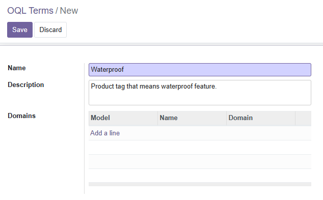
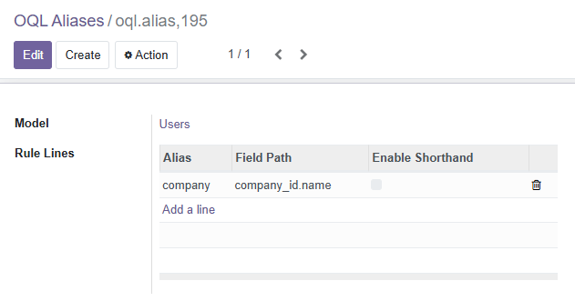
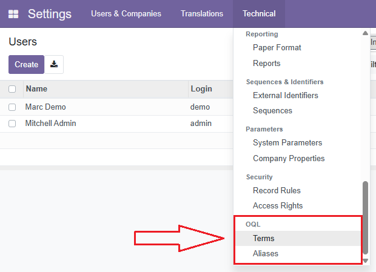

Write queries in business language, not technical domain syntax. Transform complex multi-step searches into simple, intuitive one-liners.
OQL, Business Queries, Terms, Aliases, SQL
# 4 preparatory searches
boot_catg = env['product.category'].search(...)
danner_brand = env['product.category'].search(...)
size_values = env['product.attribute.value'].search(...)
waterproof_tags = env['product.template.tag'].search(...)
# Complex domain
domain = [
('categ_id', 'child_of', danner_brand.ids),
('product_template_attribute_value_ids...', 'in', size_values.ids),
('tag_ids', 'in', waterproof_tags.ids)
]
products = env['product.product'].search(domain)
products = env['product.product'].searcho( "CatgS = 'Boot' and Brand = 'Danner' and EuShoeSize in ('40', '40.5') and Waterproof" )
Business terms No prep searches Readable by anyone
Three simple concepts that transform your queries
Map business concepts to records. Configure via UI with domain rules or relationship fields.

Shorten long field paths. Set up through the interface for cleaner queries.

Use searcho() with business language. SQL-like syntax with AND, OR, IN operators.
searcho("Waterproof and Size in ('40', '40.5')")
Install module + dependencypip install lark
Settings > Technical > OQL
Create Terms & Aliases
Replace search() with searcho()
Write business queries
# Instead of complex domain construction... products = env['product.product'].searcho( "CatgS = 'Boot' and Brand = 'Danner' and EuShoeSize in ('40', '40.5') and Waterproof" )
What Happens Automatically:
Terms resolve to record sets
Aliases expand to field paths
Query parses and executes
__oql_bin__ method for advanced scenarios
Ideal for: Product catalogs with complex attributes, customer requirement tracking, inventory filtering, e-commerce search features, and any scenario where business users need to write or understand queries.
Set up Terms and Aliases through the Odoo interface - no code needed.

Menu Path: Settings > Technical > OQL > [Terms, Aliases]
Install OQL and write your first business-focused query in under 5 minutes.
View on GitHub